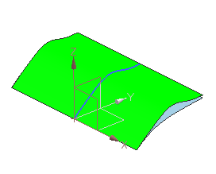

导入新定义的特征
-
在部件导航器中，右击拉伸 (3)并选择设为当前特征。
这一步允许导入的特征在时间戳记顺序上处于正确的位置，这将允许替换特征的子项进行更新。
-
选择文件→导入→部件。
-
在导入部件对话框中，清除创建命名的组复选框并点击确定。
-
在导入部件对话框中选择 des14_sk_import 并点击确定。
-
在点对话框的输出坐标组中，确保 X、Y、Z 的值均为零。
提示
要重置坐标值，点击对话框标题栏上的重置
 。
。 -
点击确定。

-
点击取消。
-
在部件导航器中，右击边倒圆 (15)并选择设为当前特征。
更新到特征时间戳记末端将允许在完成特征替换后重新生成整个模型。